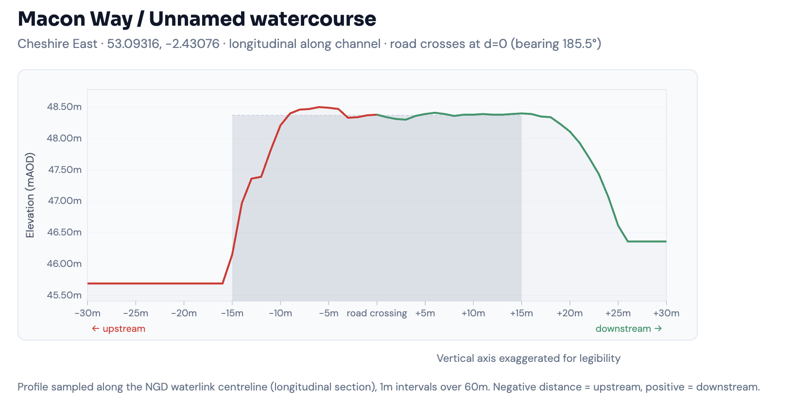

We map every culvert in your authority area, score each one for flood risk and blockage likelihood, and turn it into a prioritised register your team can work down — so you know where to look before the next storm, not after.
Risk-scored culvert map — real data, live platform
Most culvert blockages aren't found until water is already on the road. Inspections happen on a two-yearly reactive cycle — if at all — and there's no continuous record between visits. When a major event hits, Section 19 of the Flood and Water Management Act 2010 obliges Lead Local Flood Authorities to investigate; without a register of known assets, that investigation starts from scratch. Storm Babet in October 2023 made the gap visible across Yorkshire, Lincolnshire and the East Midlands.
Required after significant flood events. Continuous data supports your statutory duty.
Typical reactive inspection cycle. Blocked inlets fill silently between visits.
Typical cost of one gully clean and road closure after a culvert blockage.
Lead Local Flood Authorities in England — each with a statutory duty for ordinary watercourses and culverts.
Two tiers. A national open-data baseline you can view today, and a deeper, enhanced pass when you work with us.
27,000+ road–watercourse crossings already identified across England from OS and Environment Agency open data, each risk-scored by flood probability, infrastructure proximity, and flood history. Your authority area is ready to view today.
We run your area through the full detection pipeline using the OS NGD Water Network — including the buried and culverted sections free data misses. Pilot councils typically see significantly more crossings detected, each classified as culvert, bridge or ford from OS survey data.
OS NGD Underground classification + surveyed entrance points.
NGD Underground crossing without surveyed points.
NGD Surface Level crossing.
OS-surveyed culvert entrance with no road–water intersection — urban and Victorian assets that intersection-based detection misses.
Every culvert in your register is scored on two independent axes — how likely it is to fail, and how bad the consequences would be if it did — then combined into a single number you can sort and prioritise by.
We analyse upstream land cover, channel gradient, vegetation canopy, inlet aspect, watercourse size, pipe gradient, and historical flood evidence to estimate how likely each culvert is to block.
EA surface water flood probability, proximity to housing, schools, hospitals, emergency services, road classification, and flood history — combined to estimate the impact of a failure.
Likelihood × Consequence = a risk classification for every culvert — Critical, High, Moderate, or Low — with the contributing factors visible so your team understands exactly why each culvert was flagged.
Likelihood: High × Consequence: High
Using Environment Agency 1m LiDAR data, we analyse the terrain at each culvert crossing to estimate channel depth, embankment height, and pipe gradient — identifying potential structural issues without a site visit.

Channel depression depthEstimates how deep the watercourse cuts below the surrounding terrain.
Embankment heightMeasures how high the road sits above the channel — approximating the available space for a culvert pipe.
Adverse gradient detectionFlags culverts where the outlet appears higher than the inlet, indicating siltation risk or structural settlement.
Ponding indicatorsIdentifies upstream depressions where water may pool against the road embankment.
Terrain screening is indicative, not measured — it identifies sites worth investigating. Field verification confirms the findings.
For your highest-risk sites, add a water-level sensor at the inlet headwall. No mains power, no cellular dependency — LoRaWAN-connected, and designed to alert your team before overtopping or blockage develops.
Standard off-the-shelf hardware. No proprietary lock-in, no cellular dependency, no in-field mains power.
Select a component to explore
A waterproof ultrasonic sensor mounts above the inlet and points down at the water. It fires a 40kHz pulse every few minutes, measures echo return time, transmits the reading over LoRa, then sleeps. Battery-powered, no mains, no SIM.
A single gateway, a small weatherproof box mounted on a rooftop or utility pole, receives transmissions from sensor nodes up to 2km away in urban areas and further in open terrain. One gateway can serve dozens of sensor nodes across an area. It connects to the internet over ethernet or WiFi and forwards readings to the server. If LoRa coverage is unavailable at a site, a mobile data connection can be used as a fallback.
Once the gateway receives a reading from a sensor node, it passes the data to a server that decides what to do with it. This is where the alert rules live: if the water level crosses a set threshold, an alert fires. The server is privately operated, meaning your council's data stays under your council's control. Over time, readings are correlated against Met Office rainfall data to build a clearer picture of which culverts are most at risk and when.
When a threshold is breached, a webhook fires within seconds, delivering an alert to email, SMS, or an operations dashboard. The early warning gives highways and drainage teams time to inspect, close roads proactively, or deploy temporary measures. All data is logged, providing the continuous sensor record that supports Section 19 flood investigations.
One upstream sensor, two alert types from the same hardware: flood early warning, and blockage detection.
During heavy rainfall, upstream water backs up as flow exceeds the culvert's capacity. The sensor catches the rising surface and fires an alert before overtopping — buying highways and drainage teams time to respond before road damage or property flooding.
When debris blocks the inlet, water backs up faster than rainfall alone explains. If the sensor sits directly over the inlet, floating debris also reflects the pulse early — both signals trigger an alert. Caught in dry weather, it's a routine clean. Caught during a storm, it's a Section 19 investigation.
Adding a second sensor downstream allows direct flow differential measurement. If upstream is rising but downstream is not, the culvert is blocked. This gives maintenance teams a precise, actionable signal even without rainfall context.
One culvert blockage at Eel Brook, Church Minshull generated £476,000 in insurance claims, triggered an MP inquiry and a formal Section 19 investigation. A year of CulvertSense across an entire authority is a fraction of the cost of one event like this.
insurance claims from a single blocked culvert (Eel Brook, Church Minshull)
homes at high risk of surface water flooding in England (NHF/EA, 2026)
We're working with our first cohort of Lead Local Flood Authorities. Three stages, each evidence-gated before you commit to the next, and no operational dependency at any point.
Your authority's full culvert register — every crossing detected, classified, risk-scored 0–100, and mapped. Review with your team, prioritise, and layer in your local knowledge. Browser-based, nothing to install.
Add continuous water-level monitoring at your highest-priority sites. Half-day install per sensor, no mains power, and a shared dashboard with configurable alerts.
As your sensor network matures, we correlate water-level trends with Met Office rainfall forecasts to alert teams before water starts to rise. Rolled out to pilot partners as it develops.
Tell us about your council and the culverts that worry you most. We'll confirm whether it's a good fit and walk you through what comes next. No commitment.
Or email directly: james@culvertsense.com